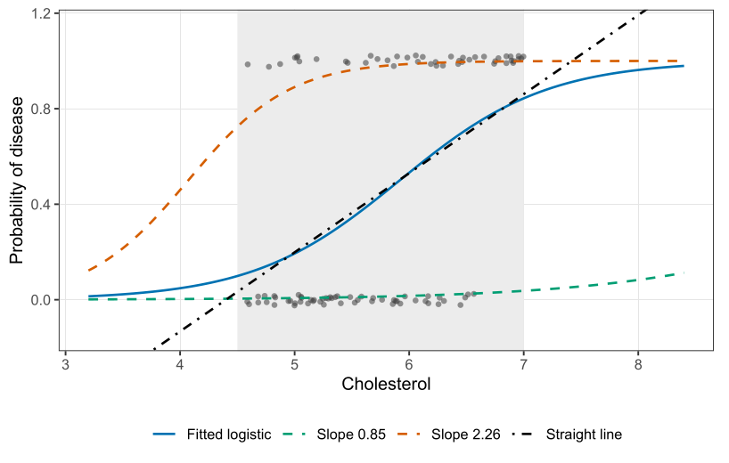
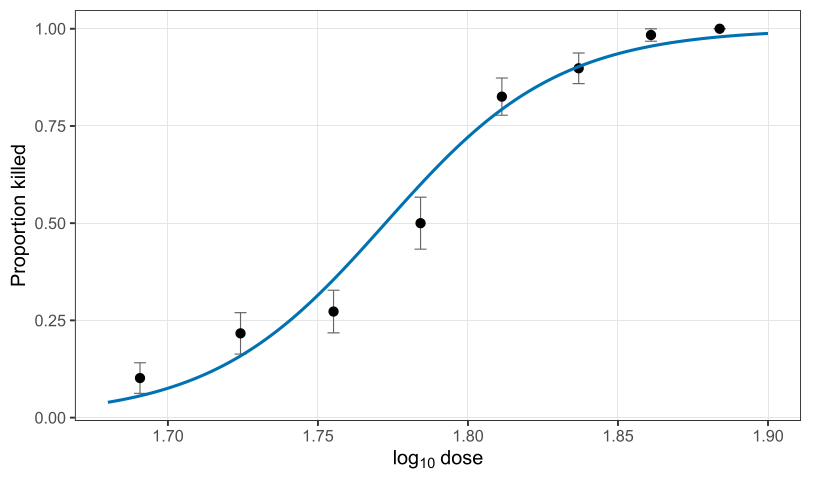

Standard errors, and models for counts
Part of Generalised linear models · 7 questions on this topic · What links here
Standard errors, and models for counts

| Part | Generalised linear models |
| Chapter | 2 of 6 in this part |
| Previous | Introduction to generalised linear models |
| Next | Underdispersion, positive responses, and quasi-likelihood |
| Questions | 7 (4 practice, 1 final prep, 2 concept) |
| Figures | 2 |
The previous chapter stopped once Fisher scoring had produced the cholesterol coefficients. Estimation is the less interesting half. This chapter is about the precision of those coefficients, and then about what changes when the response is a count rather than a coin toss.
Standard errors in a GLM
For a regular model and a large enough sample, the maximum likelihood estimator \hat{\boldsymbol{\beta}} is asymptotically normal, centred at the true value \boldsymbol{\beta}^\star, with covariance equal to the inverse Fisher information at that true value: \mathrm{cov}(\hat{\boldsymbol{\beta}})\approx {\color{blue}\boldsymbol{I}}(\boldsymbol{\beta}^\star)^{-1}. \qquad(1) We never know \boldsymbol{\beta}^\star. The usable matrix plugs in \hat{\boldsymbol{\beta}}: {\color{blue}\boldsymbol{I}}(\hat{\boldsymbol{\beta}}) =\sum_{i=1}^n \frac{\bigl(\mu'({\boldsymbol{X}}_i^\top\hat{\boldsymbol{\beta}})\bigr)^2}{\widehat{\mathrm{Var}}(Y_i)}\, {\boldsymbol{X}}_i{\boldsymbol{X}}_i^\top. \qquad(2) The standard error of \hat\beta_j is the square root of the jth diagonal entry of {\color{blue}\boldsymbol{I}}(\hat{\boldsymbol{\beta}})^{-1}. A marginal interval is \hat\beta_j\pm z_{\alpha/2}\,\widehat{\mathrm{se}}(\hat\beta_j). For a GLM we use z, not t. The normal approximation is already a large-sample statement. Once the residual degrees of freedom are past thirty or forty, a t cutoff and 1.96 are not meaningfully different, and the theory that delivers Equation 1 is a central limit theorem, not an exact normal linear model. For 95%, use 1.96.
The estimated coefficients come from Fisher scoring. Their standard errors come from the inverse Fisher information, evaluated at those coefficients. Intervals and tests for a GLM use z, not t.
Cholesterol, with standard errors
chol_file <- "data/cholest.csv"
if (!file.exists(chol_file)) {
stop("Could not find data/cholest.csv. Set the working directory to the book folder.")
}
chol <- read.csv(chol_file)
summary(glm(disease ~ gender + cholesterol, data = chol, family = binomial))
summary(glm(disease ~ cholesterol, data = chol, family = binomial))prints
Estimate Std. Error z value Pr(>|z|)
(Intercept) -9.3203 2.1714 -4.292 1.77e-05
gender -0.1094 0.4873 -0.224 0.822
cholesterol 1.5842 0.3836 4.130 3.63e-05The dispersion is reported as 1. For a binomial, that is a reminder, not an estimate: \mathrm{Var}=p(1-p) exactly, with no free \phi.
Cholesterol has a clear positive association with the log-odds of disease. Sex, given cholesterol, does not: the estimate is a tenth of its standard error. The simpler model drops sex.
Estimate Std. Error z value Pr(>|z|)
(Intercept) -9.2012 2.0992 -4.383 1.17e-05
cholesterol 1.5549 0.3592 4.329 1.50e-05A 95% interval for the cholesterol slope is 1.5549\pm 1.96\times 0.3592=(0.85,\ 2.26). On the odds scale, a one-unit increase in cholesterol multiplies the odds of disease by something between \exp(0.85)=2.34 and \exp(2.26)=9.58. The curve on the probability scale is still an S, flat near 0 and near 1. Drawing the fitted curve at the two endpoints 0.85 and 2.26 is a pointwise band for that single slope. A simultaneous band, allowing the intercept to move as well, is a different object, and it is unnecessary for this one-slope model.
Over the short window from about 4.5 to 7, a straight line and the logistic curve are not dramatically different. That is not a reason to fit the line. A cholesterol of 4.2 or 7.2 would push a straight line outside (0,1). The logistic curve is a valid probability for every cholesterol you might hand it later. If the effect were steeper, the S would be obvious and the line would fail even inside the window. The philosophical objection stands either way.
Binomial counts
Often we do not record a zero or a one for every beetle, patient, or firm. We apply a treatment to a group and count the successes. Group sizes need not match. If the members of a group are independent, the likelihood is the Bernoulli likelihood multiplied by a binomial coefficient that does not depend on \boldsymbol{\beta}. The maximiser is unchanged. The data can be stored as two columns, successes and failures, and glm recognises that layout.
Bliss (1935) exposed beetles to carbon disulphide for five hours. The dose on the page is already \log_{10} of concentration, so one unit is a tenfold increase.
| \log_{10} dose | beetles n_i | killed y_i |
|---|---|---|
| 1.6907 | 59 | 6 |
| 1.7242 | 60 | 13 |
| 1.7552 | 62 | 18 |
| 1.7842 | 56 | 28 |
| 1.8113 | 63 | 52 |
| 1.8369 | 59 | 53 |
| 1.8610 | 62 | 61 |
| 1.8839 | 60 | 60 |
dose <- c(1.6907, 1.7242, 1.7552, 1.7842, 1.8113, 1.8369, 1.8610, 1.8839)
killed <- c(6, 13, 18, 28, 52, 53, 61, 60)
notkilled <- c(53, 47, 48, 28, 11, 6, 1, 0)
response <- cbind(killed, notkilled)
summary(glm(response ~ dose, family = binomial))The fit, in four Fisher-scoring iterations, is
Estimate Std. Error z value Pr(>|z|)
(Intercept) -61.249 5.206 -11.76 <2e-16
dose 34.555 2.926 11.81 <2e-16A coefficient of 34.6 per unit of \log_{10} dose is a statement about a tenfold change in concentration, and the experiment only runs from 1.69 to 1.88.

Quoting a one-unit effect is like quoting a one-kilometre effect in a study of human height. Bring the unit back to the data. For an increase of 0.01 in log-dose, \exp(0.3456)=1.41, so the odds of being killed are multiplied by about 1.41. The standard error scales the same way, 2.926\times 0.01=0.02926, and \begin{align*} \exp(0.3456-1.96\times 0.02926)&=\exp(0.288)=1.33,\\ \exp(0.3456+1.96\times 0.02926)&=\exp(0.403)=1.50. \end{align*} Rounding can put the upper endpoint at 1.49 rather than 1.50. Either rounding is the same scientific sentence: a small step up in log-dose raises the odds of death by roughly 30 to 50 percent, and the interval sits entirely above 1.
Counts
A count is a non-negative integer: insurance claims in a year, particles in a Geiger counter, episodes of a behaviour. The mean has to stay non-negative for every covariate. The natural link, and the canonical one, is the log: \log\mu_i={\boldsymbol{X}}_i^\top\boldsymbol{\beta} \qquad\text{equivalently}\qquad \mu_i=\exp({\boldsymbol{X}}_i^\top\boldsymbol{\beta}). \qquad(3) The identity link \mu_i={\boldsymbol{X}}_i^\top\boldsymbol{\beta} is the second thing people reach for. It can look acceptable on a short stretch of x, where an exponential and a straight line are hard to tell apart. It is still not a model we will use. Somewhere outside the window the line is negative, and a mean count cannot be. The log link is a legitimate model for any {\boldsymbol{X}} and any \boldsymbol{\beta}.
The outer distribution for a count, as a starting point, is Poisson: Y_i\mid {\boldsymbol{X}}_i\stackrel{\mathrm{ind}}{\sim}\mathrm{Poisson}\!\left(\mu_i=\exp({\boldsymbol{X}}_i^\top\boldsymbol{\beta})\right). Poisson is the French for fish.1 There is a precise limit behind the “rare events” slogan. If Y\sim\mathrm{Binomial}(n,p) and n\to\infty with p=\lambda/n, then Y converges in distribution to \mathrm{Poisson}(\lambda). Five runs in a week is, in that caricature, a coin tossed once a second for 604{,}800 seconds with success probability 5/604800, provided every second is independent of every other second and the probability never changes. Those are the Poisson-process assumptions, and they are the reason a real count is so often not Poisson. A Geiger counter has a dead time after each click. Incidents in a behavioural study arrive in spurts. Even a careful laboratory has a rate that wobbles. The variance is then not exactly the mean.
Quasi-Poisson
Unless there is a strong reason to insist on a pure Poisson process, use
\mathrm{Var}(Y_i\mid {\boldsymbol{X}}_i)=\phi\mu_i=\phi\exp({\boldsymbol{X}}_i^\top\boldsymbol{\beta}).
\qquad(4) Here \phi>1 is overdispersion and \phi<1 is underdispersion. The case \phi=1 is the Poisson. This is a quasi-Poisson model. The variance function is a legitimate description of spread. Inside the exponential family, a variance exactly proportional to the mean forces the Poisson, so there is no exponential-family distribution with a free \phi in Equation 4. You cannot simulate a new count from a quasi-Poisson specification alone. We will use it as a description. A stricter view, which reserves the name model for something one can simulate from, would refuse the name. We will come back to that distinction when we treat quasi-likelihood properly. For fitting, glm only needs the mean and the variance, so family = quasipoisson runs.
Reading a log-linear coefficient
Two covariates are enough: \log\mu=\beta_0+\beta_1 x_1+\beta_2 x_2. Increase x_1 by one unit and hold x_2 fixed. The mean is multiplied by e^{\beta_1}. The same sentence with the labels swapped is \beta_2. The intercept is the mean when every covariate is at its baseline, \exp(\beta_0), and it is meaningful only when that baseline is a real situation. Do not judge a slope by whether the coefficient looks small. A small coefficient may be a large effect written in a small unit, and the comparison that matters is with the standard error.
Mine injuries
Myers, Montgomery, and Vining report injuries in the upper seam of 44 West Virginia coal mines. Three covariates survived their selection: inner burden thickness in feet (x_1), the percent already extracted from the seam below (x_2), and years the mine has been open (x_3). The fitted mean used for the interpretation is
\hat\mu=\exp(-3.2707-0.0015 x_1+0.0627 x_2-0.0317 x_3).
\qquad(5) The glm summary from the fit below prints an intercept of -3.7207, with slopes -0.00148, 0.06270, and -0.03165. The slopes match the rounded values in Equation 5. The intercepts do not: -3.2707 and -3.7207 differ by a transposition. The reading below follows Equation 5 as written, and the standard errors and the dispersion are taken from the printed summary, where the slopes are the quantities being tested.2
On Equation 5, the intercept is the mean number of injuries when the inner burden is 0 feet, nothing has been extracted below, and the mine is brand new: \exp(-3.2707)=0.038. A new mine and a mine with nothing extracted below are imaginable. Zero inner burden is a hole at the surface, which is not a mine. The intercept is algebra, not a sentence to publish.
A one-foot increase in inner burden multiplies the mean by \exp(-0.0015)=0.999. A foot is about thirty centimetres. A per-foot effect is not worth quoting. Per ten feet the coefficient is -0.015, and the mean is multiplied by \exp(-0.015)\approx 0.985. Still a small multiplicative change, and still something to compare with a standard error rather than with 1 by eye.
One extra percentage point of extraction below multiplies injuries by \exp(0.0627)=1.065. One extra year of age multiplies them by \exp(-0.0317)=0.969, which is about 1.03 times fewer injuries. The sign is not the story you might have expected. A dangerous mine may have been closed before it could appear in a data set of mines that are still open. Age in this table is entangled with having survived.
The Poisson log-likelihood is \sum_i\{y_i\log\mu_i-\mu_i\}, up to a constant. Differentiating and setting the score to zero produces \sum_{i=1}^n\frac{y_i-\mu_i}{\mu_i}\,\mu_i\,{\boldsymbol{X}}_i =\sum_{i=1}^n(y_i-\mu_i)\,{\boldsymbol{X}}_i={\boldsymbol{0}} when the link is log, because then \mu'=\mu and \mathrm{Var}=\mu, so the two cancel. It is still nonlinear in \boldsymbol{\beta}, because \mu_i=\exp({\boldsymbol{X}}_i^\top\boldsymbol{\beta}). The general score from the previous chapter is the same equation before that cancellation. Software does the iteration.
need <- function(pkg) {
if (!requireNamespace(pkg, quietly = TRUE)) {
install.packages(pkg, repos = "https://cloud.r-project.org")
}
suppressPackageStartupMessages(library(pkg, character.only = TRUE))
}
need("locfit")
data(mine, package = "locfit")
mines <- data.frame(
y = mine$frac,
x1 = mine$inb,
x2 = mine$extrp,
x3 = mine$time
)
fit1 <- glm(y ~ x1 + x2 + x3, data = mines, family = poisson)
fit2 <- glm(y ~ x1 + x2 + x3, data = mines, family = quasipoisson)
summary(fit1)
summary(fit2)The Poisson summary is
Estimate Std. Error z value Pr(>|z|)
(Intercept) -3.72068 0.97888 -3.801 0.000144
x1 -0.001479 0.000824 -1.794 0.0728
x2 0.06270 0.01227 5.110 3.2e-07
x3 -0.03165 0.01631 -1.941 0.0523with dispersion fixed at 1. Inner burden and mine age are borderline. Percent extraction is not. The quasi-Poisson summary has the same four estimates. Only the standard errors change, because the estimated dispersion is 0.905, a bit under 1: given these three covariates, the injury counts vary less than a Poisson process. The quasi-Poisson standard errors are smaller by about \sqrt{0.905}, the t statistics move accordingly, and mine age now sits below 0.05 (p=0.048) while inner burden remains borderline (p=0.067). All three terms stay in the model. A term that is hovering on the boundary, and that still carries information, is not dropped. The underdispersion fits the selection story: mines that would have been wild never stayed open long enough to be counted, so the ones we see are a little more deterministic than a pure count process.
Two models with a real distribution
A quasi-Poisson variance is not, by itself, a distribution you can draw from. If you want a distribution, and you only need extra variation in the direction of overdispersion, the usual next model is the negative binomial. One construction is a gamma mixture of Poissons: draw a rate from a gamma distribution, then draw a Poisson count at that rate. The mean and variance are
\mathrm{E}(Y)=\mu,
\qquad
\mathrm{Var}(Y)=\mu+\frac{\mu^2}{\nu},
\qquad \nu>0.
\qquad(6) This is quadratic in the mean, not a constant times the mean. It is always at least the Poisson variance. As \nu\to\infty the extra term vanishes and the Poisson returns. The parameter \nu is traditionally called a dispersion, but a larger \nu concentrates the counts, so it behaves as a concentration. The negative binomial is an exponential family in \mu only when \nu is held fixed. The fit in MASS::glm.nb is a profile: fix \nu, solve the GLM for the mean, move \nu, and repeat.
That mixture cannot produce underdispersion. Counts that are tighter than a Poisson need a different family. The Conway–Maxwell–Poisson distribution has been available since Conway and Maxwell (1962), from queueing theory with dependent waiting times, and it was brought back into statistical use by Shmueli and coauthors in 2005. In the original scaling, f(y;\lambda,\nu)\propto \frac{\lambda^y}{(y!)^\nu}, \qquad y=0,1,2,\ldots, with \nu<1 overdispersed, \nu=1 exactly Poisson, and \nu>1 underdispersed. Calling \nu a dispersion runs the name backwards: larger \nu means a tighter distribution. The serious defect is that \lambda is not the mean. There is no closed form for \mathrm{E}(Y) or \mathrm{Var}(Y), so a regression on \lambda cannot be compared with a Poisson or negative-binomial regression on \mu.
A repair from 2017 puts the mean in the parameter and solves backwards for the rate: f(y;\mu,\nu)\propto \frac{\lambda(\mu,\nu)^y}{(y!)^\nu}. Now \mu is exactly the mean, the same parameter as in the Poisson and the negative binomial, and the variance still has no closed form. That is acceptable if the mean is what you came to estimate. The variance is needed for standard errors, and those can be computed after the fit. The bankruptcy-bids example, which is strongly underdispersed once the covariates are in the model, is the next chapter. The point to keep from this chapter is why the mean parameterisation exists: without it, a better AIC on the \lambda scale is not a comparison with a model for the mean.
For the beetle fit, recompute \exp(0.3456\pm 1.96\times 0.02926) and state the interval as a multiplicative change in odds per 0.01 of log-dose. Explain, in one sentence, why the unscaled coefficient 34.6 is a bad unit for that sentence.
The Poisson score set to zero is \sum_i(y_i-\mu_i){\boldsymbol{X}}_i={\boldsymbol{0}} under the log link. Show the cancellation, starting from the general GLM score (y_i-\mu_i)\,\mu'({\boldsymbol{X}}_i^\top\boldsymbol{\beta})/\mathrm{Var}(Y_i).
In the mine regression, the quasi-Poisson estimates match the Poisson estimates and the standard errors do not. Explain why, using the fact that \phi factors out of the score and is estimated afterwards.
State one thing the negative binomial variance Equation 6 can represent that Equation 4 cannot, and one thing the Conway–Maxwell–Poisson can represent that the negative binomial cannot.
Questions on this topic
Open a question to attempt it. Its worked answer is folded away at the bottom of the page.
| Question | Source | Answer |
|---|---|---|
| Q30. Poisson regression model statement | Practice set | ✓ |
| Q31. Interpreting Poisson regression coefficients | Practice set | ✓ |
| Q32. Deriving the Poisson log-likelihood | Practice set | ✓ |
| Q54. Poisson regression and overdispersion | Practice set | ✓ |
| Question 19. Poisson regression for fish species | Final preparation | ✓ |
| C21. A log-link coefficient | Concept check | ✓ |
| C22. Negative-binomial variation | Concept check | ✓ |
What links here
Pages (4)
- Introduction to generalised linear models — via negative binomial
- Underdispersion, positive responses, and quasi-likelihood — via negative binomial, log-linear model, quasi-Poisson
- Smooth means — via log-linear model
- How to use the final preparation — via Poisson regression
Questions and answers (9)
See also
Footnotes
Siméon Poisson’s surname is the French word for fish. That coincidence does not make the Poisson distribution the obvious model for fish counts. The joke is optional. The model is not.↩︎
The disagreement is left visible rather than resolved by silently picking one intercept. The baseline mean is not a meaningful mine either way.↩︎